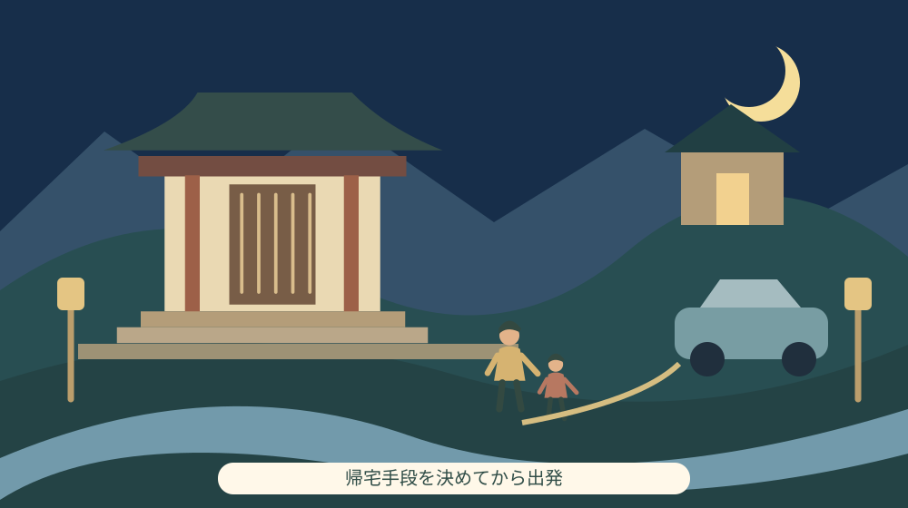

天宮神社の観月祭2026｜10月3日夜の案内
Q. 2026年10月3日の天宮神社の観月祭は、何時から参加を考えればよい？
森町観光協会の案内では、天宮神社の観月祭は2026年10月3日、17時から神事、18時から演奏会です。会場は森町天宮576。終了時刻、料金、予約、雨天時、駐車場の条件は掲載本文では分かりません。出発前に天宮神社0538-85-5544へ必要事項を確かめ、家族と帰宅手段を決めてください。
夜の催しを迎える人の準備から考える
神事と演奏会を同じ夕方に整えるには、出演する人だけでなく、会場を整える人の時間が要ります。訪れる側が帰った後にも片付けは残ります。森町の夜の文化行事を紹介するとき、まず、その場を迎える人の準備と負担があることを大切にしたいと思います。
大石浩之（磐田市／不動産業）です。私は、夜の催しは「行けるか」だけでなく「帰れるか」まで決めて出かけたいと考えます。2026年10月3日（土）の天宮神社の観月祭は、神事と演奏会の開始時刻が分かれています。家族の予定へ入れる際、その違いと帰宅の段取りを整理します。
この記事は2026年10月3日の17時より前に公開する当日案内です。森町観光協会の掲載情報は10月2日現在のものとされ、10月3日に本文を確認しました。2026年の開催を見届けた記録ではありません。開始後や別の日に読む場合は、これから参加できる催しとして受け取らないでください。
公式に分かる時刻を明記する一方、終了時刻や駐車場などは未確認のまま残します。想像で空欄を埋めれば予定表は整いますが、実際の移動で困るのは出かける家族です。分からない条件を一つずつ確かめ、見送る場合も含めて判断できる記事にします。
17時の神事と18時の演奏会を分けて覚える
森町観光協会「観月祭（天宮神社）」は、開催日を2026年10月3日の1日間と案内しています。17時から観月祭神事、18時から演奏会です。18時だけを手帳へ書くと、神事もその時刻から始まると思い違いをする可能性があります。何を見たいかに応じて、二つの開始時刻を分けて記録します。
演奏会では、能、二胡、フルートが披露されると掲載されています。確認した案内本文に、演目の順番やそれぞれの出演時刻はありません。特定の演奏だけを目当てに出かける場合も、18時からのどの時間に行けば確実に見られるかまでは、この情報から決められません。
会場と主催者は天宮神社です。所在地は静岡県周智郡森町天宮576、問い合わせ電話は0538-85-5544です。観光協会の案内は、詳細を神社へ問い合わせるか、神社のSNS等を確認するよう勧めています。最新の変更を知る際には、催しを主催する側の案内へ戻ります。
掲載写真について、公式案内は2025年の様子であると説明しています。2026年の会場準備や客席の状態を示す写真ではありません。写真に見える座席や天候を、10月3日当日の条件として読み替えないようにします。この記事の挿絵も、実際の会場配置を写したものではなく、案内を考えるための説明図です。
終了時刻は、確認した観光協会の本文には記載がありません。演奏会が18時から始まることを根拠に、19時や20時に終わると計算することはできません。家族の迎えや公共交通を考えるには、この未確認部分が残ります。帰りの時間を決める前に確認したい事項です。
天宮神社の文化を知ることと、今夜の演目を知ること
森町の公式「文化財」ページには、天宮神社十二段舞楽のほか、天宮神社のナギ、本殿及び拝殿が掲載されています。神社を訪れるきっかけから地域の文化へ関心を広げられる資料です。ただし、この文化財紹介は観月祭の出演内容や、夜間に見学できる場所を知らせる当日案内ではありません。
森町の「小國・天宮両社の舞楽」は、両社の舞について写真や説明で紹介しています。天宮神社の文化を知る資料と、10月3日の観月祭の案内は役割が違います。観月祭に能があることを、十二段舞楽が上演されることへ置き換えてはいけません。名前が似た芸能や同じ場所の行事を混同しないようにします。
舞楽について詳しく読みたい人には、小國神社と天宮神社の十二段舞楽の記事があります。今夜の観月祭とは分けて読むための補助線です。一度の訪問で神社の文化を全部見る予定にせず、今回案内されている催しへ焦点を合わせる方が、時間も組みやすくなります。
境内の木に関心がある人には、天宮神社のナギを扱った記事もあります。木や建物を守る仕事は催しの日だけのものではありません。夜の訪問では、見たい場所があっても立入りの案内を守り、写真のために暗い場所へ踏み込まないようにします。
帰宅手段を決めると、到着の予定も変わる
夜間の移動を考える今日の確認は、誰と行き、何で帰るかです。家族の車で帰るなら、運転する人、迎えを頼むか、待ち合わせる場所を決めます。行きだけ送ってもらえる場合も、帰りまで同じ人が対応できるとは限りません。送りと迎えを一つの約束にせず、別々に確かめます。
公共交通を利用するなら、土曜日に利用できる便と帰りの時刻を、交通事業者の最新案内で確認してください。この記事では当日の時刻表を検証していないため、利用できる最終便の時刻は載せません。催しが終わってから調べる方法では、選べる移動手段が残っていない可能性があります。
終了時刻が分からない段階で、最後まで見て特定の便へ必ず乗れるとは約束できません。帰りの便を優先して途中で退出する必要があるなら、退出できるタイミングや動線を事前に確認する方法があります。催しの進行を妨げないためにも、当日に会場で急いで判断する項目を減らします。
複数の世帯で行く場合は、全員が同じ時刻までいられるかを聞きます。翌日の仕事や子どもの生活時間によって、帰る時刻を分けた方がよいこともあります。私は、最後まで見ることを家族の共通目標にしない方が、参加を選びやすいと考えます。短時間の参加が可能かも主催者の案内で確かめます。
帰り道の見え方は、到着時と同じとは限りません。夕暮れ時の反射材と移動を考える記事も参考に、家から車や交通機関までの区間を含めて準備します。履き慣れた靴や足元を照らせる物を用意するか、家族で確認しておくと動きやすくなります。
料金・予約・雨天・駐車場は未確認として扱う
観光協会の掲載本文には、料金と予約の要否が記載されていません。料金欄がないことを無料の証拠にはできず、予約方法が書かれていないことを予約不要の証拠にもできません。家族の人数を伝えて、参加に必要な手続きがあるかを天宮神社へ確認します。
雨天時の扱いも、確認した本文からは分かりません。雨なら必ず中止とも、屋内へ移して必ず開催とも言えません。天候だけを見て自己判断で予定を確定するのではなく、出発前に主催者の最新案内を見ます。遠方から来る家族へは、変更の確認が必要な催しであることを先に伝えます。
駐車場の場所、利用条件、台数は掲載本文にありません。住所を地図へ入れて着いた先に、車を停められる場所が用意されているとは限りません。車で参加するなら、指定の駐車先があるかを尋ね、近隣の土地や店の駐車場を代わりに使えると決めつけないようにします。
車いすや歩行の補助が必要な家族がいる場合は、入口から会場までの経路、段差、休める場所を確認したいところです。案内本文には、その条件の説明もありません。必要な配慮を具体的に伝えれば、参加できるか判断しやすくなります。神社という名称だけで、歩きやすさを一括して判断しません。
トイレ、座席、持込みなどの条件も、本文にないものをこの記事から保証できません。全てを電話で一度に尋ねるより、自分の家族が参加を決めるために必要な項目を先に絞る方法があります。小さな子ども連れなら休憩、車で来るなら駐車先というように、優先順位を付けます。
良い点｜神事と演奏の時刻が読み分けられる
観月祭の案内で私が良いと感じるのは、神事17時、演奏会18時と開始時刻が分けられていることです。家族が見たい内容を相談するとき、漠然と「夕方の行事」と覚えるより予定を立てやすくなります。祭りの一部だけを音楽会として切り離さず、神事が先にあることも理解できます。
能、二胡、フルートという内容が明示されている点も、参加を考える材料になります。私は、詳しい知識がない家族でも、どのような表現に触れられるか話し始められる点に価値を感じます。演奏の細かな順番が分からなくても、何を見に行くのかを家族で共有できます。
主催者と問い合わせ先が記されていることも助かります。案内の不足を読者が想像で埋めずに、天宮神社へ確認する経路があるからです。私は、変更の可能性がある催しほど、情報を見つけたページと最終確認先を結び付けておくことが役立つと考えます。出発前に戻る場所が明確になります。
注文したい点｜帰る時刻が分かると家族で選びやすい
観月祭について私が知りたいのは、終了の目安と帰りの移動に必要な情報です。開始時刻が分かっても、迎えを頼む家族や公共交通を利用する人には、もう一段の確認が残ります。神事と演奏を整える準備に加えて問い合わせへ答える負担があることを踏まえ、案内で共有できると助かる項目です。
ただ、神事や演奏の進行には変動があり、終了を分単位で約束できない事情も考えられます。私は、正確な終了時刻を無理に求めたいわけではありません。目安があるか、途中退出に配慮が必要かだけでも、家族の選択が変わります。未確認の事情を主催者の落ち度として語らないようにしたいと思います。
夜の移動を来場者ごとにその場で調整する形では、担い手へ負担が集まります。今日できる小さな一歩は、自分の家族の帰宅手段を先に決めることです。神社に送迎があると期待したり、近くなら誰かが乗せてくれると見込んだりせず、自分たちの移動を自分たちで確認します。

対案・結論｜今日は帰宅手段を家族と決める
10月3日の観月祭へ出かける前に、家族と帰宅手段を一つ決めます。車なら運転する人、公共交通なら乗る予定の便、迎えなら連絡する相手です。まだ決められない場合は、何が分からないために決められないかを一行書きます。終了目安なのか駐車先なのかで、確認先への質問が変わります。
主催者へ確認するときは、「何人で、どの時間帯に、どの手段で行く予定か」を簡潔に伝えます。必要な質問は、予約、料金、駐車先、雨天時などから選びます。電話は0538-85-5544です。催し当日の準備があることにも配慮し、確認できた回答は家族へ共有して同じ問い合わせを重ねないようにします。
出発直前には神社の公式案内やSNS等で変更を再確認します。見送りを決める場合も、夜の移動に無理が残るならそれは家族の判断です。文化行事への敬意は、必ずその日に参加することだけで示すものではありません。今回の情報を読み、別の機会に文化を学ぶ選択も残せます。
家族に残す記録は、住所と待合せ場所を分ける
家族へ渡すメモには、2026年10月3日、天宮神社、森町天宮576、17時神事、18時演奏会を書きます。その下に帰宅手段と連絡先を置きます。会場住所は目的地を示すもので、車を停める場所や迎えの待合せ場所と同じとは限りません。確認した場所は別欄へ書いてください。
同行しない家族にも、帰宅予定が未定なら未定と伝えます。決まっていない時刻を仮に約束するより、何時頃に一度連絡するかを決める方法があります。スマートフォンの電池が切れた場合に備え、必要な電話番号を紙へ控えることもできます。家族の安心を、その場の通信だけに任せない工夫です。
家の鍵や車の鍵を持つ人が途中で帰るなら、残る人が帰宅できるかも確かめます。夜の外出では、催しの予定と家の出入りがつながっています。私は不動産の仕事に関わる立場からも、家族の予定と鍵の所在を切り離さず、行き帰りを一続きにして確認する方法を勧めたいと思います。
大石の視点｜文化を楽しむ人が、移動の負担を引き受ける
私は、文化行事の紹介は、帰宅の段取りまで届いて初めて暮らしの情報になると考えます。神事と音楽を用意する担い手の仕事を尊重するなら、来場する側は自分たちの移動を曖昧なまま持ち込まない。これは冷たい線引きではなく、それぞれが担う仕事を確かめることです。
正直に言えば、終了時刻を確認できないまま、家族に最後まで観覧する予定を勧めてよいのか私にも迷いがあります。夜の行事の魅力は感じますが、帰る手段を失う不便は記事の言葉で埋められません。私はまず家族の帰宅条件を決め、その範囲で参加できるかを確認する方を選びます。
森町の可能性は、催しを増やすことだけにあるとは思いません。今ある神事や演奏を、担い手が無理なく迎えられ、家族が無理なく訪れられる形にする余地もあります。今日は帰り方を一つ決める。小さな段取りですが、来場者の都合を主催者へ全部預けない具体的な行動です。
まとめ｜今夜の案内と、開催した記録を混同しない
天宮神社の観月祭は、公式案内では2026年10月3日17時から神事、18時から演奏会です。能、二胡、フルートが案内されています。終了時刻、料金、予約、雨天時、駐車場は本文で確認できず、必要な条件は神社へ尋ねる形になります。この記事は開催前の情報整理です。
参加を考える家族は、今日は帰宅手段を決めてください。主催者の最新情報と家族の移動がそろえば、参加するかを落ち着いて判断できます。2026年の開催結果を確認した記事ではないため、当日以降に読む人も、案内された予定と実際の実施状況を分けて受け取ってください。
よくある質問
天宮神社の観月祭2026は何時からですか？
森町観光協会の案内では、2026年10月3日（土）17時から観月祭神事、18時から演奏会です。会場は森町天宮576の天宮神社。演奏会では能、二胡、フルートが案内されています。終了時刻は本文では分からないため、帰りの迎えなどに必要なら神社へ確認します。この記事は開催前の案内です。
観月祭に予約は必要ですか。料金はいくらですか？
確認した観光協会の掲載本文には、予約の要否と料金が記載されていません。記載がないことを予約不要や無料の根拠にはできません。参加する人数と希望する時間帯を整理し、天宮神社0538-85-5544へ必要事項を確認してください。神社のSNS等の最新案内も出発前に確認します。
観月祭は雨でも開催しますか。車を停められますか？
雨天時の扱いと駐車場の場所・条件は、確認した観光協会の本文では分かりません。掲載写真は2025年の様子で、2026年当日の会場状況を示していません。車で行く場合は駐車先を神社へ確認し、近隣の土地へ独断で停めないでください。開催変更と帰宅手段を確認してから出かけます。
実家や土地の資料を家族で整理する場合は、実家カルテも利用できます。売却未定でも使える本サイト運営会社の民間サービスです。森町や各団体の公式手続ではなく、利用は任意です。
公式情報源
2026年10月3日確認（2026年10月確認）。掲載情報・数値・受付や開催条件は変わる場合があります。行動前に公式の最新案内を確認してください。個別の契約・不動産・税務などの判断は担当窓口や専門家に相談してください。